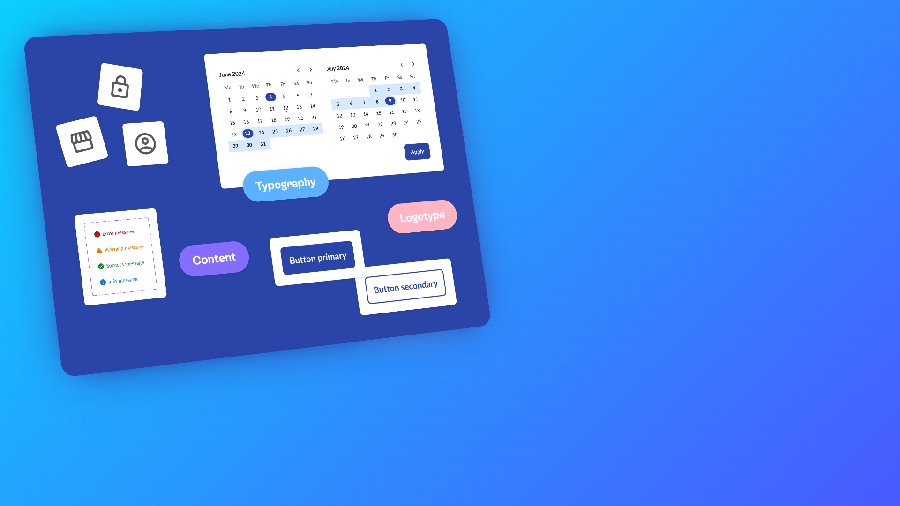
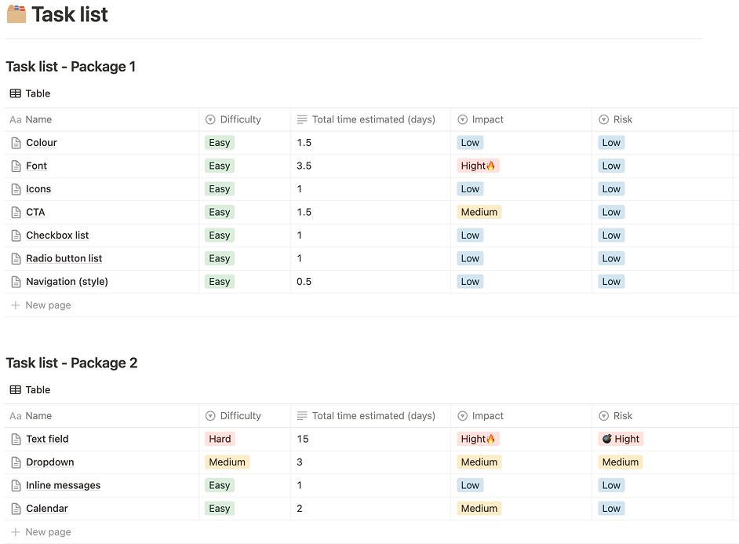
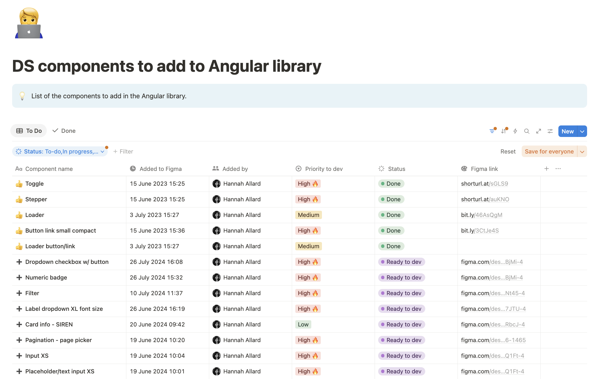
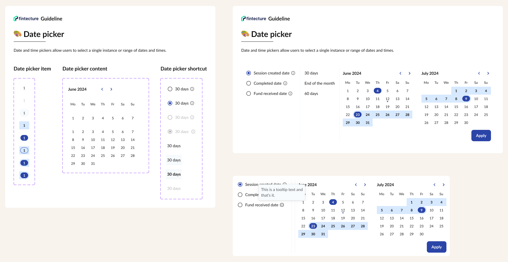
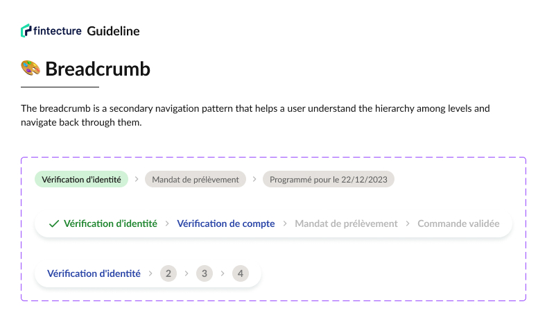
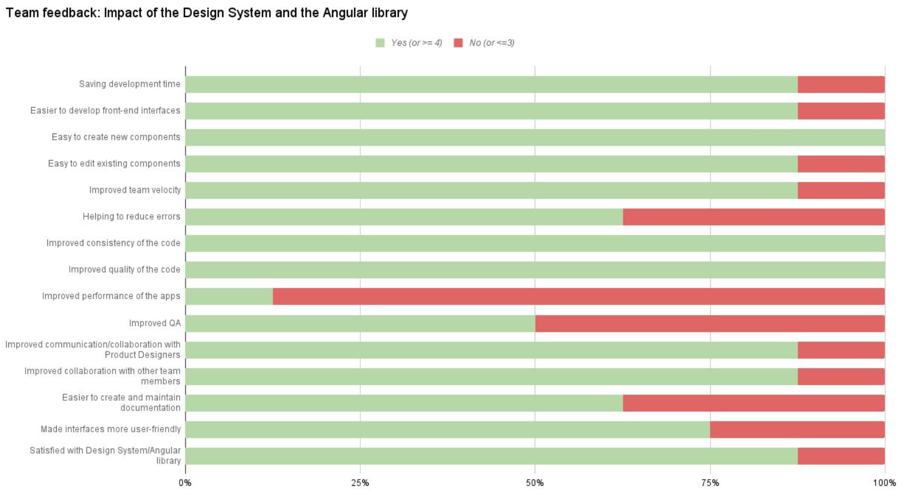

Fintecture
Design System
My role
Product Designer & Project Lead
Tools
Figma
Angular library
Notion
Timeline
15 months
From June 2022 to September 2023
Context
When I launched this project in 2022, Fintecture didn’t have a Design System yet. Each designer and developer had their own way of doing things, which made collaboration less smooth and sometimes led to inconsistent interfaces. The result: significant time loss and growing design and technical debt.
As a Product Designer, I saw an opportunity: to create a Design System with a clear vision — structure our foundations, facilitate collaboration between teams, strengthen visual identity, and most importantly, make product creation more fluid and scalable.
The goal: design, document, and implement a scalable Design System, aligned with the brand identity, to improve productivity, quality, and user experience.
Problem
Before the Design System, here’s what we were experiencing on a daily basis:
- Designers spent too much time searching for or recreating already existing components.
- Developers often rewrote the same elements, increasing the risk of bugs and slowing down delivery.
- The interface lacked uniformity and clarity, making it harder for users to navigate.
- The product wasn’t scalable, and cross-team collaboration (especially between squads) was inefficient.
Goals
📈 +25% productivity in product & tech teams
✅ Reduce design and code errors
⏱ Shorten QA time
🎨 Improve visual consistency and user experience
🧱 Reduce technical and design debt
Process
01
June 2022
Creating the foundations in Figma
02
June 2022
Implementation method
03
July 2022
Pitching to stakeholders
04
July 2022
Integration into Angular Library
05
July 2022
Setting up a systematic QA process
06
Jan-Oct 2023
Implementation of the DS in the Console
07
Aug-Sep 2023
Implementation of the DS in the Console
08
September 2023
Design System governance
Documentation


Solution
- A complete Design System in Figma, developed in an Angular library
- A clear collaboration framework between designers and developers
- Integrated QA processes within the component lifecycle
- A shared documentation space, accessible to all product/tech teams


Results
To measure the actual impact of the Design System, we ran an internal survey with developers. Here’s what came out:
90%
of developers said the Design System saved them time and increased their velocity when working on front-end interfaces
95%
found it easy to create or modify components in the Angular library
100%
agreed it improved code quality and made communication between team members easier than ever before
On the product and organizational side:
90%
of the Console is built on Angular Design System components
70%
of Connect is also covered
100%
of the interface (Console & Connect) is aligned with the Design System
Significant time savings in production
Better interface consistency and reliability
Reduced QA time and fewer production errors
Stronger collaboration between designers and developers
On the user experience side, there was a clear improvement:
The interfaces became more user-friendly and responsive
The unified components brought a sense of visual and functional consistency
The navigation became more intuitive and interactions more seamless.
Users encountered a coherent, polished experience that reinforced trust

What I learned
- A Design System is alive: it evolves, reinvents itself, and adapts.
- It’s important to strike a balance between rigor and flexibility to let teams innovate without breaking consistency.
- Every product has its own needs: a good Design System knows how to adapt.
- Most importantly, communication is key: support the change, train teams, and foster a product culture built around quality and collaboration.

Want to learn more?
I documented the entire journey in a detailed article covering the challenges, solutions, and key insights from implementing Design Systems in a corporate environment.
Explore additional projects


Fintecture
Onboarding

Fintecture
Dashboard